24个TRAIN实例：固定yaw局部匹配诊断
每个任务展示最后一个已采集参考轨迹状态，不按成功结果挑图。绿色仅为GT世界点投影，并非人工确认实例框；真实可见性未知。三列RGB完全相同，仅ROI/文本查询不同。没有Goal Belief更新或闭环SR结论。
train_00146_0033 / Building
This is a house with a yellow roof located on Wellington Road. There are three other houses near this house but they have a orange roof. In front of this house, there is a gray car parked at an angle.
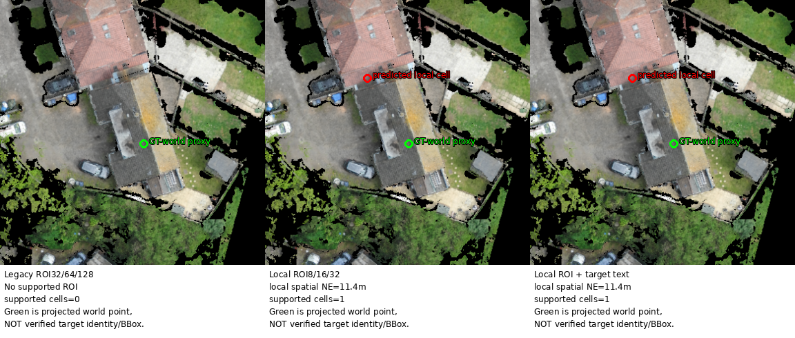
Target: A house with a yellow roof.
References: Three nearby houses with orange roofs and a gray car parked at an angle in front of the target house.
train_00545_0081 / Car
This is the gray car on Leslie Road. In front of it is a black car and behind it is a white car. On its right there is a white car facing the opposite direction.
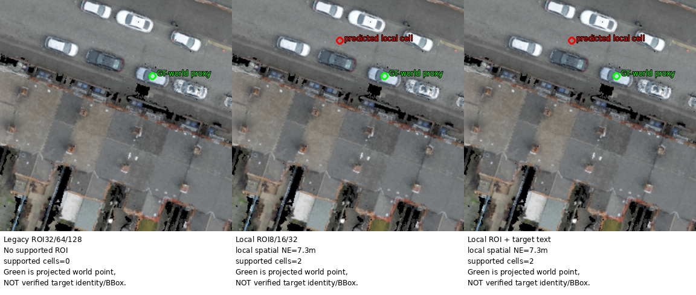
Target: A gray car.
References: A black car in front, a white car behind, and another white car to the right facing the opposite direction.
train_06719_0186 / Car
A multicolored blue and white truck, beside a row of trees, and next to a set of dumpsters, in a parking lot facing the security building
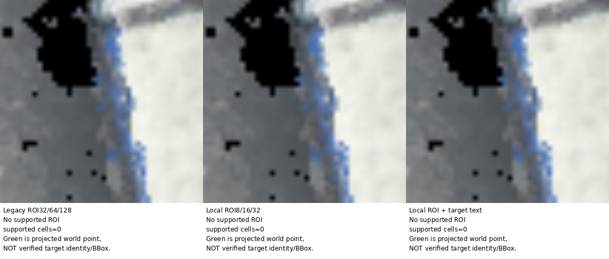
Target: A multicolored blue and white truck.
References: A parking lot beside a row of trees and a set of dumpsters, facing a security building.
train_07527_0054 / Parking
The rectangular car park at the West Midlands police custody suite with many cars parked in it. It is between Holford road and Manchester > Bournemouth stations.
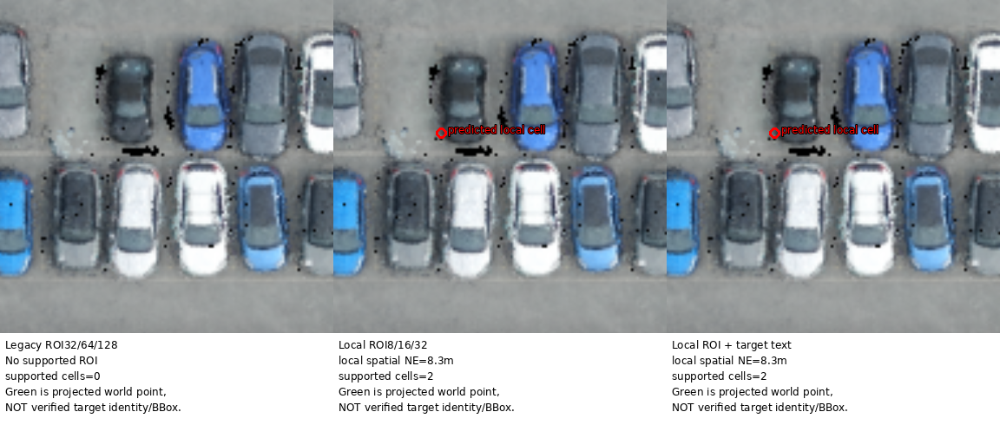
Target: A rectangular car park with many parked cars.
References: The West Midlands police custody suite, Holford road, and Manchester > Bournemouth stations.
train_03998_0128 / Car
The black car that is behind the white car and in front of the silver car on the Broadway Road when you come from the Birchfield Road.
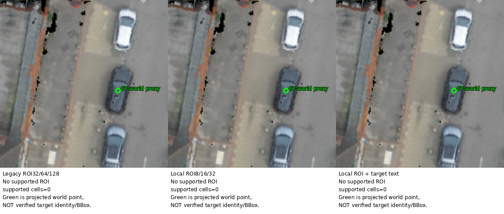
Target: A black car.
References: A white car ahead and a silver car behind on Broadway Road, approached from Birchfield Road.
train_04369_0063 / Building
A cut off brick building with a black roof and white windows at the end of Chesterwood Gardens. It has a very long grass front yard that extendsd past the vehicles parked the the parking spaces in front of the house beside it.
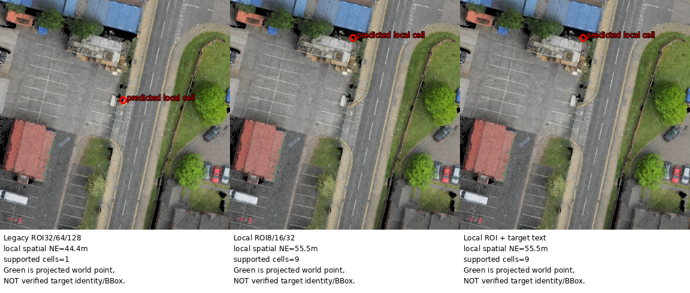
Target: A cut off brick building with a black roof and white windows.
References: A very long grass front yard extending past vehicles parked in spaces in front of the neighboring house.
train_06348_0039 / Parking
A long big parking area without a car parked inside of it along Aldridge road opposite to the building named The Coppice
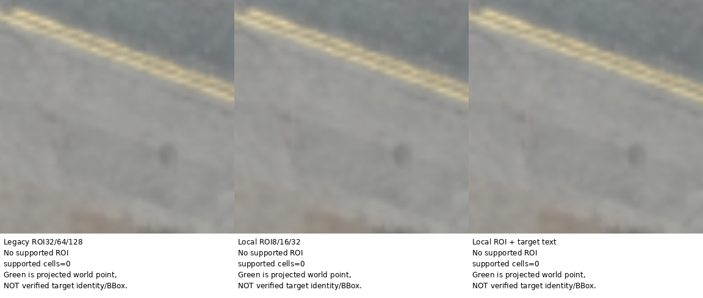
Target: A long large empty parking area with no cars parked inside.
References: A road and the building named The Coppice across the road.
train_11180_0028 / Building
This is a building located near Senior Combination Room and Offices. There is the Paddock behind this building.
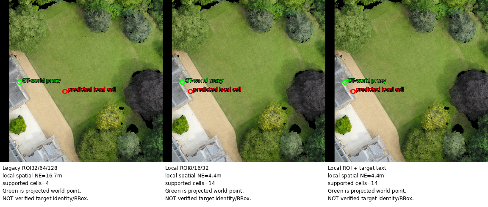
Target: A building.
References: Senior Combination Room and Offices nearby, with the Paddock behind the target building.
train_13635_0067 / Car
One gray car in between another gray car and a dark gray car, parked in between the Sir William Hardy building in the psychological Laboratory /psychology Library
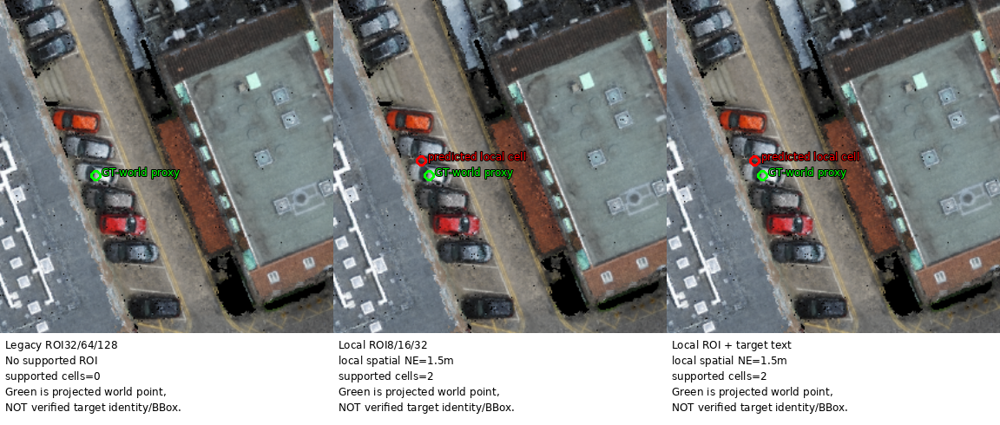
Target: A gray car.
References: Another gray car and a dark gray car, with the Sir William Hardy building and psychological Laboratory /psychology Library.
train_13954_0051 / Ground
This is an area of ground to the left of the 55 St Andrew's Street Building. It has a path and is lined with trees. It's in front of a tall brown building and behind St Andrew's Street.
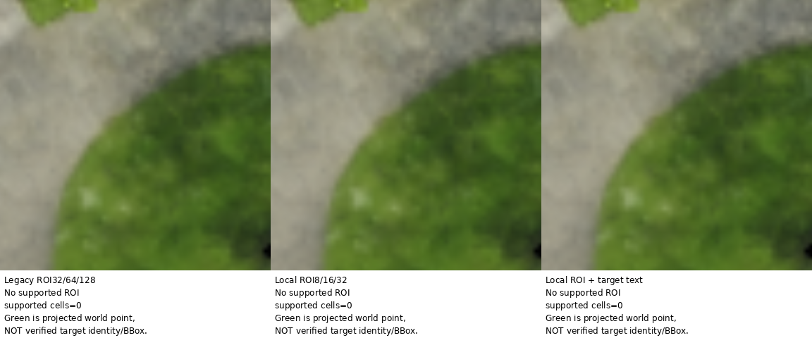
Target: An area of ground with a path, lined with trees.
References: A tall brown building and the 55 St Andrew's Street Building, near St Andrew's Street.
train_13984_0030 / Parking
A small parking area on Downing Place beside the building called Stone Yard Center and in front of the large curved balcony that extends out from the large building with a flat white roof. There is a blue car and a white car in the in.
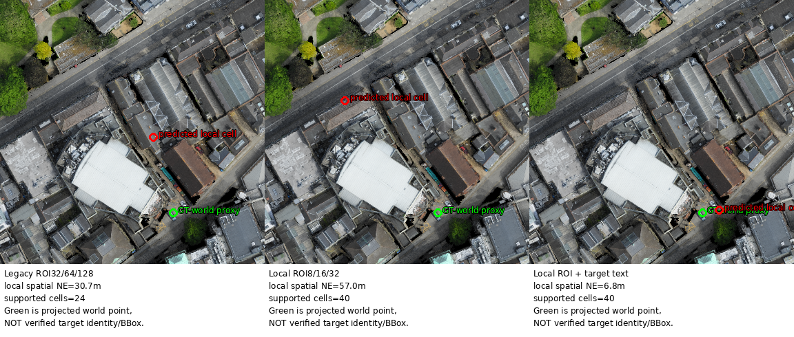
Target: A small parking area containing a blue car and a white car.
References: Stone Yard Center beside the parking area, and a large curved balcony extending from a large flat white roof building.
train_14576_0136 / Ground
This is like a traffic median that has Chesterton Road on one side and Victoria Road on the other. It has a grass lawn and three trees on it.
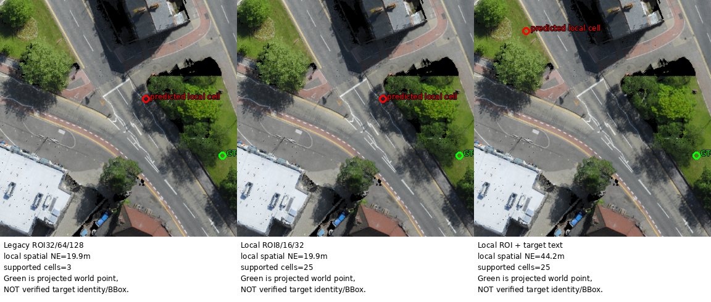
Target: A traffic median with a grass lawn and three trees.
References: Chesterton Road on one side and Victoria Road on the other.
train_15435_0076 / Ground
this is a green ground and is part of the large green area by the Park Terrace road. this piece is lighter in color than the rest of the area and contains three yellow bar-shaped earthen areas. This area is rectangular.
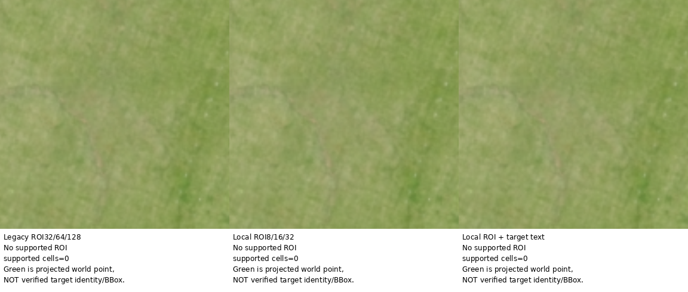
Target: A rectangular lighter green area of ground containing three yellow bar shaped earthen areas.
References: A larger darker green area beside Park Terrace road.
train_16200_0076 / Building
Multi-colored and multi-unit beige and white house on the corner of Parker Street and Clarendon Street, across from the park lodge building
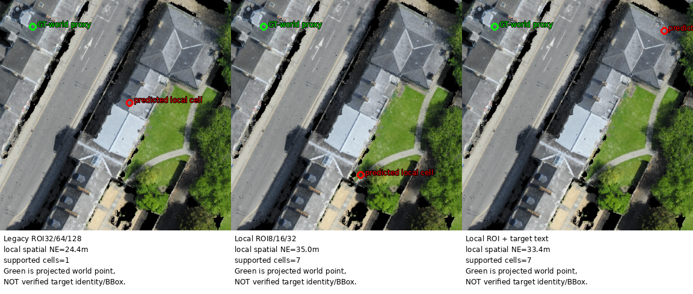
Target: A multicolored multi unit beige and white house.
References: A street corner across from the park lodge building.
train_17035_0208 / Car
The White car that is no car in front and the back, one white car is across on the City Road, parked in front of the building that is between the Grafton Street and Paradise Street.
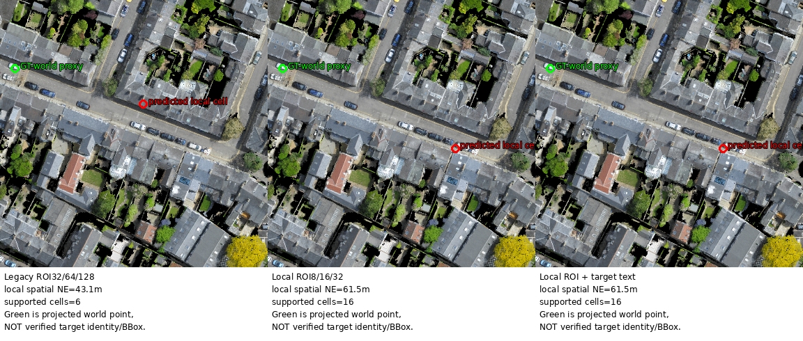
Target: A white car with no car immediately in front or behind.
References: Another white car across City Road and a building between Grafton Street and Paradise Street.
train_17172_0185 / Parking
The parking lot that is behind the large tan building with a flat roof, that sits between Eden Street Backway, Fitzroy Street, and New Square.
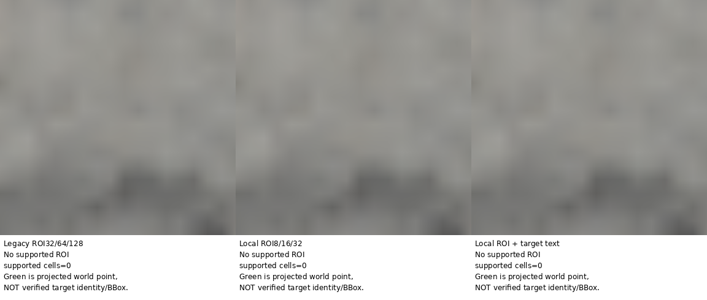
Target: A parking lot.
References: A large tan building with a flat roof between Eden Street Backway, Fitzroy Street, and New Square.
train_17662_0116 / Building
The grey roof building found right of the Eden Chapel building and left of the Cambridge Community Kitchen building.
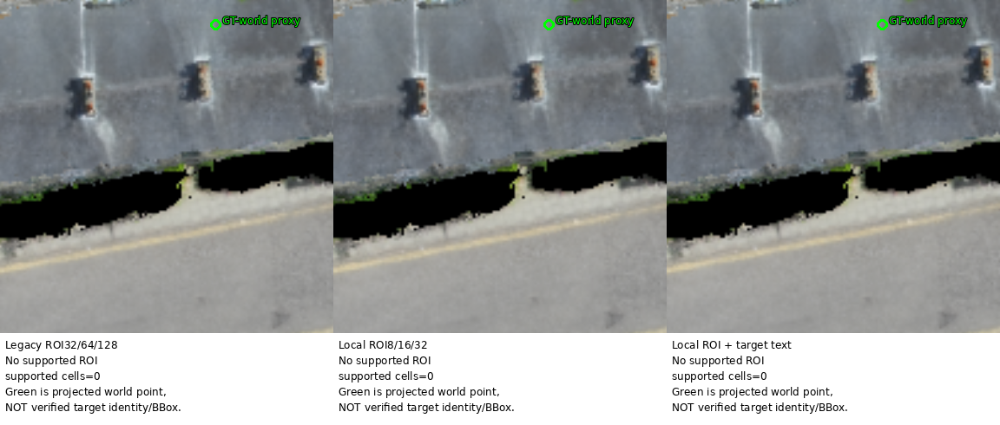
Target: A building with a grey roof.
References: Eden Chapel building and Cambridge Community Kitchen building.
train_18753_0055 / Car
One black car in between a dark blue car and a white car in front of a two-story beige home that has solar panels on its roof off stanway close
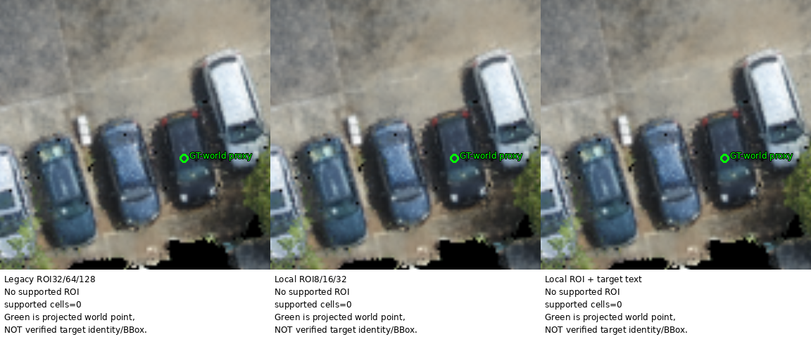
Target: A black car.
References: A dark blue car and a white car, in front of a two story beige home with solar panels on its roof.
train_07858_0033 / Parking
A parking lot with six vehicles on it, to red one white one Gray one black and one light blue, next to a brown c-shaped building with a gray roof near the edge of the map, off Honey Hill
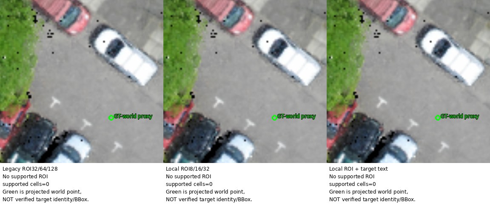
Target: A parking lot with six vehicles: two red, one white, one gray, one black, and one light blue.
References: A brown C shaped building with a gray roof near the edge of the map.
train_08150_0210 / Ground
This is a rectangular area of green ground in front of the Causewayside Building and to the right of the Fen Causeway road.
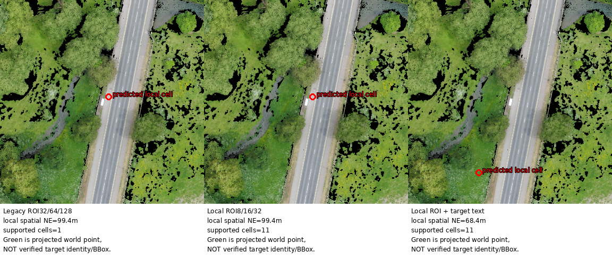
Target: A rectangular area of green ground.
References: Causewayside Building and Fen Causeway road.
train_08432_0148 / Building
The building at the far end of the Study Centre building with blue at the bottom and red near the roof and a white chimney.
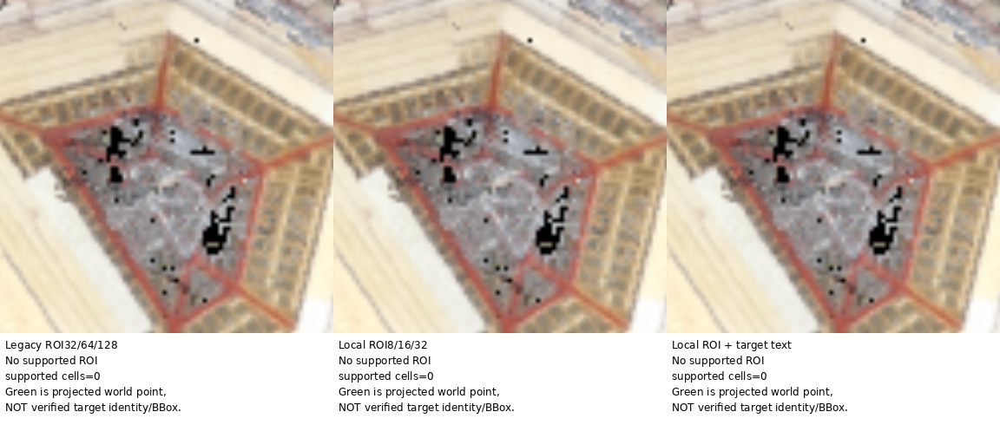
Target: A building with blue at the bottom, red near the roof, and a white chimney.
References: The far end of the Study Centre building.
train_09260_0096 / Ground
Hey grass yard with multiple trees on it on the edge of the map, behind the friars' building, and in between the Provost's lodge and the Bodley's building
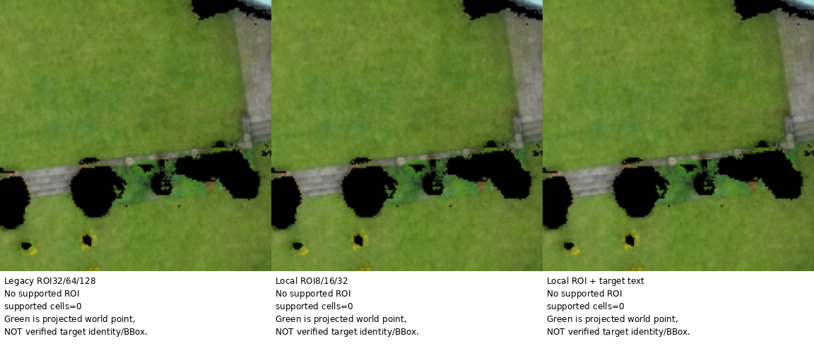
Target: A grass yard with multiple trees near the edge of the map.
References: The friars' building, Provost's lodge, and Bodley's building.
train_10849_0283 / Ground
Between the Trinity Street footpath and Great Court E, F, G, H, I and K, this patch of grassy ground has a green tree on it.
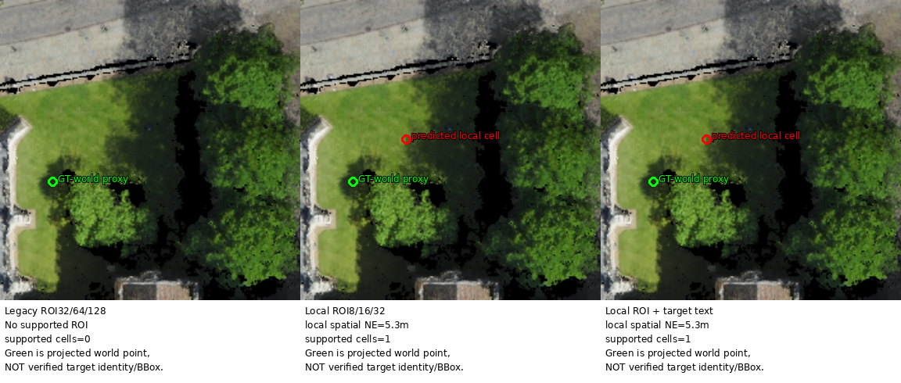
Target: A patch of grassy ground with a green tree.
References: Trinity Street footpath and Great Court E, F, G, H, I and K.
train_10899_0195 / Parking
On the north side of Magdalene Street, this parking lot is between buildings across from the Benson Building, with a tree at the center.
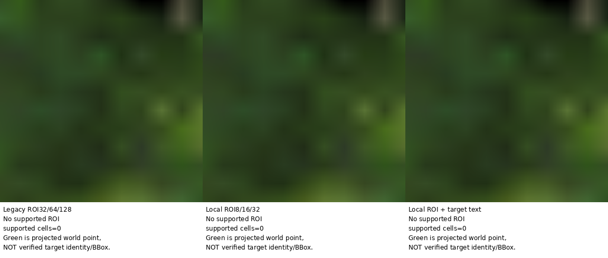
Target: A parking lot between buildings with a tree at its center.
References: Magdalene Street and the Benson Building across the street.